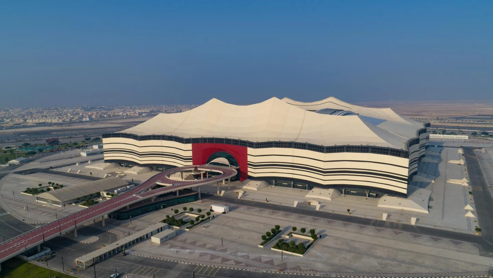
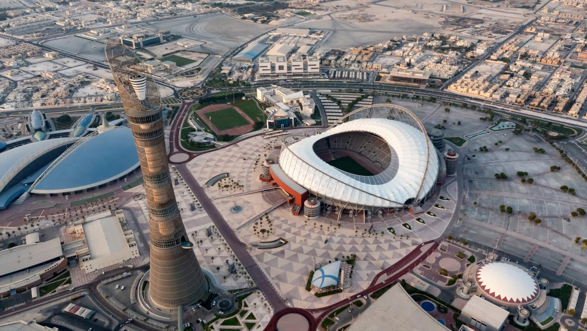

20/NOV

18/DIC
Estadios
Al Bayt

- Capacidad: 60.000 personas
- Locacion: 35km al norte de Doha
- Partido inagural
Lusail
- Capacidad: 80.000 personas
- Locacion: 20km del centro de Doha
- La Final del Mundo

Ahmad Bin Ali

- Capacidad: 40.000 personas
- Locacion: 20km al oeste de Doha
Al Janoub
- Capacidad: 40.000 personas
- Locacion: 22km al este de Doha

Al Thumama

- Capacidad: 40.000 personas
- Locacion: 12km al sur de Doha
Education City
- Capacidad: 40.000 personas
- Locacion: 13km al noroeste de Doha

Khalifa International

- Capacidad: 40.000 personas
- Locacion: 5km al oeste de Doha
Stadium 974
- Capacidad: 40.000 personas
- Locacion: 10km al este de Doha